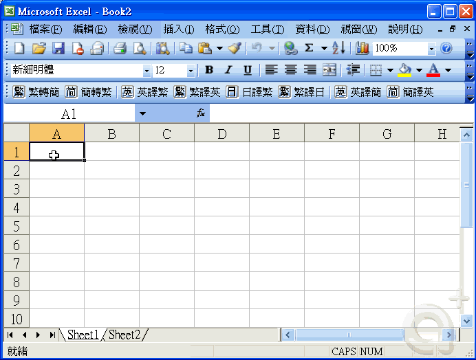

OLE物件只提供單純的 連結參考文件，並可自動或手動更新連結。
OLE物件本身不像 影像(IMAGE)可以使用 IMAGECLIP 指令 使用截取邊界來定義影像物件的子面域。
所以依你的需求可能就要用 技巧性方法 來獲得解決，以下提供你方式參考，有問題請再提~
※動態操作步驟如下:有問題請再提※
步驟一、在Excel以 工作表 來區分算試、數據及要顯示的數據
Sheet1 → 為 算試、數據過程。
Sheet2 → 為 顯示的數據。
在Excel存檔離開時以 Sheet2工作表 為最後畫面，而後在AutoCAD即只顯示 Sheet2工作表(顯示的數據)。

步驟二、在AutoCAD插入OLE物件後，以 WIPEOUT 指令 使用空白區域覆蓋既有的物件。
建立聚合線後使用 WIPEOUT 指令，選取 聚合線並把 遮蔽框 關閉隱藏。